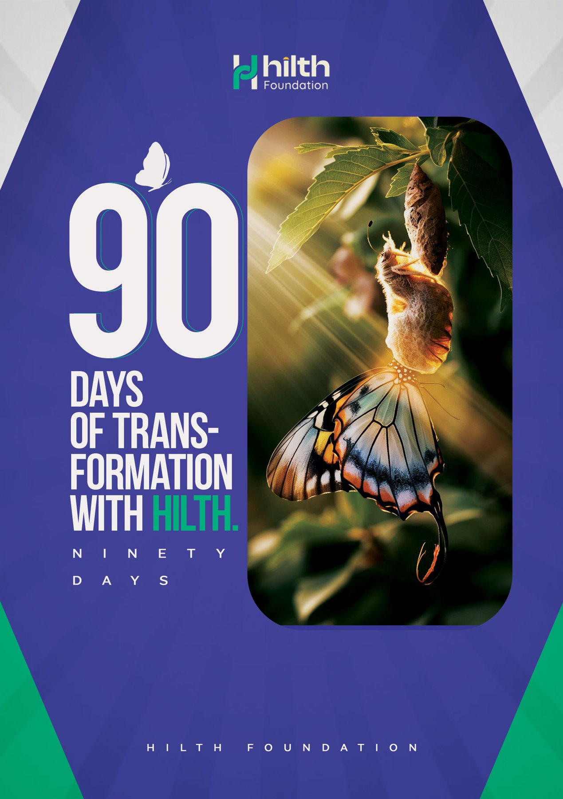

All programmes03 / Self-discovery
Your next chapter starts with you.
A guided self-transformation journey for individuals who want to understand education, know themselves and find meaning in life.
03

90 Days of Transformation
A guided self-discovery notebook designed to help students understand who they are, clarify their purpose, and find direction in life.
The journey runs through 9 cycles of 9 days, each asking 3 intentional questions for reflection. At the end of each cycle, students reflect on insights to gain clarity on their future self.
100 GHS per
copy
Order on WhatsApp